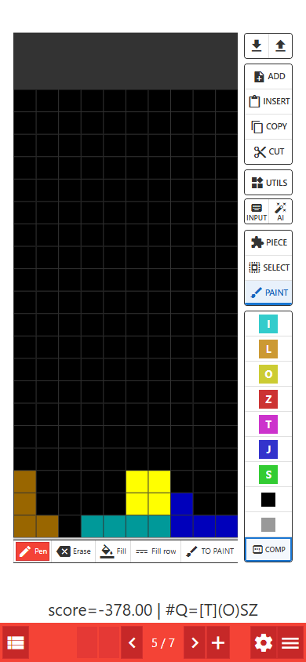
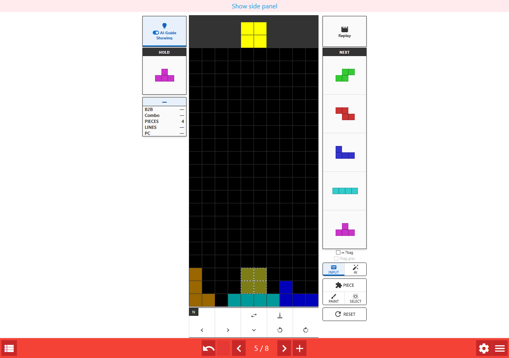
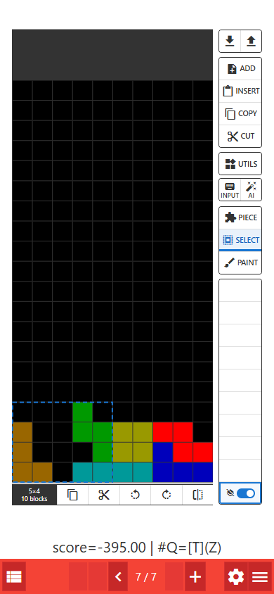
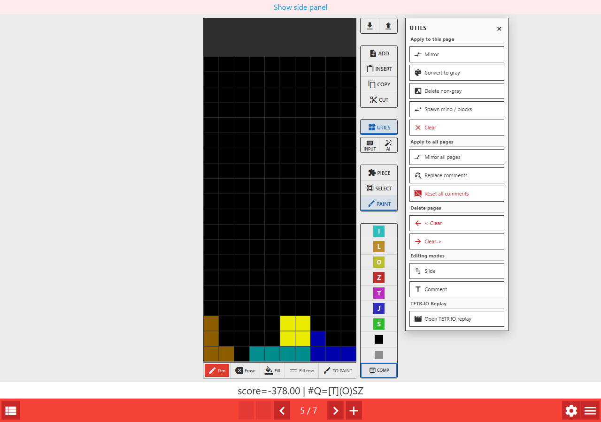
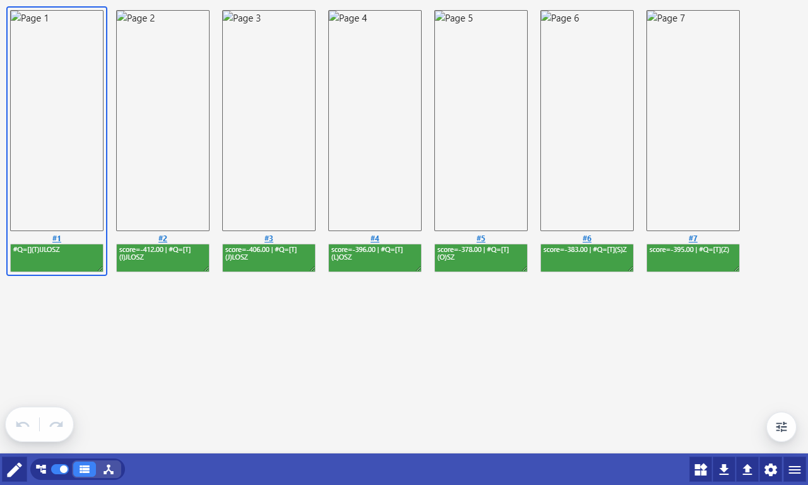
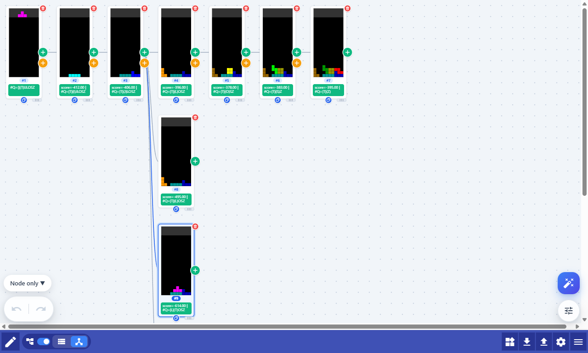
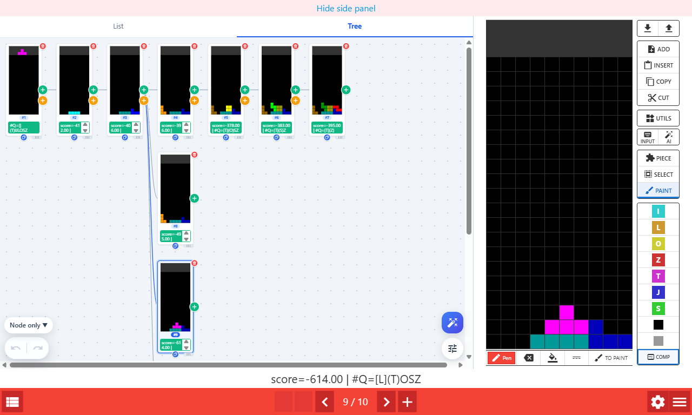
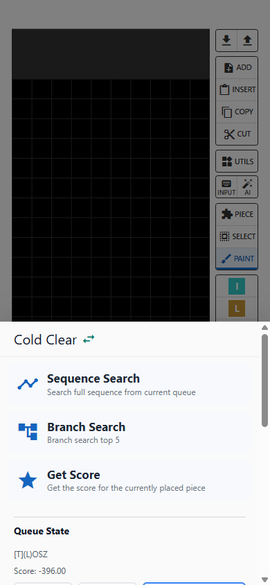

Get started
This manual is created and maintained with generative AI using the implementation and the live app as its basis.
- Open Fumen Mobile Fork.
- Choose a color in the editor, then tap or drag across the field to place blocks.
- Press + at the bottom to create the next page.
- Use the list icon at the bottom left to inspect all pages.
- Open Settings with the gear at the bottom right, and Import/Export, Reload, or Help from the menu (≡).
The five screens
Reader
View completed fumen data. It is useful for moving between pages, playing the animation, and checking comments. Select the pencil icon to move to Edit.
Edit
Edit the field, pieces, comments, and pages. Most work starts on this screen.
List
Review every page as a card. It is useful for reordering pages, editing comments, and exporting images or URLs.
Tree
Branch from the same position into multiple sequences. It is useful for organizing candidate moves, setups, and completions.
TETR.IO Replay
Play back a TETR.IO multiplayer replay (.ttrm), evaluate moves with AI, and take any position into Edit.
While Tree mode is enabled, switch between List and Tree with the list and tree buttons in the overview's bottom bar. When Tree mode is enabled, page order follows the tree structure. On PC, List or Tree can also appear in a side panel beside Edit.
Edit the field

Draw with PAINT
Pen
Choose from seven colors, black, or gray, then tap or drag to place blocks. Long-press a color to spawn its corresponding piece and switch to PIECE.
Erase
Remove blocks. When Delete spawn mino when an eraser drag passes over it is enabled, the drag also removes SPAWN pieces it passes over.
Fill and Fill row
Fill a connected area or one row with the selected color. Choose black (empty) to erase the same area.
COMP
Select four cells to infer a piece from its shape and confirm it with the matching color. Long-press to clear colored blocks and SPAWN pieces while leaving gray blocks.
Mino ⇄ blocks
Use TO PAINT in the context tray to turn a SPAWN mino into four blocks at the same position. Without a SPAWN mino, press TO MINO and pick one of the highlighted shapes to turn it back into a mino. While picking, the button reads CANCEL; press it again to stop. The action is also available as Spawn mino / blocks in UTILS and as a key assignment (B by default). Paint blocks do not line-clear through Lock.
The right-side rail
| Button | What it does | Long press |
|---|---|---|
| Import (down arrow) | Open Import/Export for inserting or loading data from the clipboard | — |
| Export (up arrow) | Open Import/Export for copying data, saving images, and opening URLs | — |
| ADD | Add a page after the current page | — |
| INSERT | Insert clipboard fumen data or a field image as the next page | Replace all pages with the loaded content |
| COPY | Copy the current page in fumen v115 format | Copy all pages |
| CUT | Copy and delete the current page | Cut all pages |
| UTILS | Open the panel for mirroring, gray conversion, page deletion, Slide, Comment, TETR.IO Replay, and more | — |
| FLAGS | Open the panel for Key page / Reference page, Lock, Rise, and Mirror flag. Shown only when Show FLAGS is on | — |
| INPUT | Switch to INPUT and operate the queue's CURRENT piece directly | — |
| AI | Open the AI menu (Cold Clear and Sold Slear) | — |
| PIECE, SELECT, PAINT | Switch the editing mode | PIECE: delete the SPAWN piece (in INPUT, reset the field and piece) |
When the rail labels do not fit, the buttons show icons only.
Switch between PAINT, PIECE, INPUT, and SELECT
| Mode | Main actions |
|---|---|
| PAINT | Use Pen, Erase, Fill, Fill row, and TO PAINT / TO MINO. The palette shows block colors. |
| PIECE | Spawn pieces from the palette, then use Hold, hard drop, horizontal movement, soft drop, and rotation. SRS+ also offers 180° rotation. Holding a horizontal move repeats according to the DAS and ARR settings. Use Delete in the palette to remove the piece and RESPAWN to spawn it again. In PIECE, + grays out the field when it creates the next page. |
| INPUT | Directly operate the queue's CURRENT piece. It shows HOLD/NEXT, placement statistics, the AI Guide, and the Replay button. |
| SELECT | Drag across the field to select a rectangle, then copy, cut, rotate left, rotate right, or mirror it. |
Press the selected PAINT or SELECT button again to show or hide the context tools below the field. While they are hidden, you can edit the garbage (rise) row. When the tray is too narrow, labels collapse into icons first, and the tray scrolls horizontally if it still does not fit.
Play pieces in INPUT

- INPUT: Open it from INPUT on the rail. Operate the queue's CURRENT piece; a hard drop moves to the next page and spawns the next CURRENT. NEXT is listed upward from the nearest piece.
- HOLD / NEXT: Select them to open Piece queue settings. The queue is stored in the page comment as data such as
#Q=[](I)OTLJSZ. Closing the dialog promotes the first NEXT piece when CURRENT is empty. - Placement statistics: Below HOLD, INPUT shows the latest line clear or spin plus B2B, Combo, PIECES, LINES, and PC. Pages taken from a TETR.IO replay also show ATTACK, CANCEL, and SENT. Short screens show fewer rows.
- AI Guide: Turn it on or off with the button above HOLD. See The AI Guide in INPUT.
- Replay: The button above NEXT opens the TETR.IO Replay screen.
- ∞ 7bag: Automatically refills the queue with randomized seven-piece bags. 7bag grey directly below it is available only while infinite 7-bag is on.
- 7bag grey: Groups every seven placements into one page and grays the completed bag's field. It hides ordinary comments while keeping queue and progress as editor data. INPUT workspace branches are protected in Tree mode.
- RESET: Resets the field and CURRENT. With infinite 7-bag on, it starts over with a new random queue.
Reuse a region with SELECT

- Choose SELECT and drag from the start point to the end point on the field.
- Choose Copy, Cut, Rotate left, Rotate right, or Mirror from the context tools.
- Copied or cut regions are saved in an empty palette slot. Select that slot, then tap the field to stamp it.
- Long-press a slot to pin the part and keep it saved. The switch at the bottom of the palette controls whether empty cells pass through when stamping.
UTILS and FLAGS

- Apply to this page: Mirror, Convert to gray, Delete non-gray (also removes the SPAWN piece), Spawn mino / blocks, and Clear.
- Apply to all pages: Mirror all pages, Replace comments, and Reset all comments. Reset all comments preserves tree data and can be undone.
- Delete pages: <-Clear deletes the pages before the current page, and Clear-> deletes the pages after it.
- Editing modes: Slide opens a tray for moving the field (Up + gray, Up, Left, Right, Down, Done). Comment opens a tray with Blank and Inherit.
- TETR.IO Replay: Open TETR.IO replay moves to the replay screen.
- FLAGS: Toggle Key page / Reference page, Lock, Rise, and Mirror flag. On a page with Lock on, line clears are applied when moving to the next page.
- Panels: Drag the header to move a panel. An item normally closes UTILS. Enable Keep the UTILS menu open to keep choosing items while using the field.
Pages and comments
Move between pages
Use the left and right buttons at the bottom. Long-press to jump to the first or last page.
Insert in the middle
Use + or INSERT even when a next page already exists. The new page is inserted between the current and next pages.
Undo and redo
Undo or redo the latest edit with the buttons at the bottom. While operating a NEXT queue in INPUT, Undo and Redo move across one consumed piece at a time. History is preserved when editing across screen modes.
Comments
Write explanations or NEXT queue data in the field below the board. In List, edit comments while viewing all pages; replace text across all pages from UTILS.
Page rotation
Set a retained page count to drop the oldest page numbers when additions exceed the limit. Set 0 for no limit.
Organize pages in List
Open it with the list icon at the bottom left of the editor.

- Select a card once to make it active, then select the active card again to move to its Edit screen.
- Use #page number links to move to a page. In the side panel, only the Edit field on the right updates.
- Drag a card to reorder pages. Reordering is disabled while Tree mode is enabled.
- Edit a comment directly in its text area. Use Replace comments in UTILS to replace text across all pages.
- The bottom bar holds Back to Edit, the Tree mode switch, the List and Tree buttons (only in Tree mode), UTILS, Import, Export, Settings, and Menu. Undo/Redo is at the bottom left, and View settings is the floating button at the bottom right.
- UTILS: Without leaving List, mirror, gray out, or clear the current page, mirror all pages, replace or reset comments, delete pages, or open TETR.IO Replay.
- View settings (the bottom-right button) includes the Trim top blank switch, a Zoom slider, and All settings. The slider snaps near 100%, and tapping the percentage returns to 100%. Use Ctrl + the mouse wheel to zoom on PC.
Branch with Tree
- Turn on the switch next to the tree icon in the List bottom bar.
- Select the tree view button in the bottom bar to switch to Tree.
- Select the node to branch from, then use the colored buttons to create the next sequence.

Add, move, and delete
| Action | Click | Drag a node over another node |
|---|---|---|
| Green plus | Add a page as a continuation of the selected node | Move it after that node |
| Orange plus | Add a new branch from the selected node | Move it to the branch |
| Blue duplicate (below the node) | Duplicate a node or branch | Becomes a blue plus while dragging; move as a branch from that node's parent |
| Delete page (top right) | Delete the pages in the selected Move/Delete scope. Undo from the notification immediately afterward. | — |
- Dragging: Start a drag from the Drag to move grip below the node.
- Move/Delete: Choose Node only, Node & descendants, or Descendants only from the bottom-left chip. The same scope applies to moving and deleting.
- Descendants only: Keep the node and move or delete only its descendants. The green button is available when there is one direct child. Only when the destination is a leaf node can multiple child subtrees be moved while keeping their original order.
- Delete: Select the Delete page icon at the top right of a node. Restore it with Undo in the notification after deletion. The last page cannot be deleted.
- Select a node: Select a node once to make it active, then select the active node again to move to its Edit screen.
- Disable Tree mode: A confirmation dialog appears because the tree structure will be deleted. You can undo the change.
- Add a parent tree: The dashed plus card creates an independent root that is not connected to the existing branches. Use it to manage another set or loop in the same fumen.
- View settings: The bottom-right button toggles Trim top blank and Gray out with + button, and sets the zoom. Gray out with + button grays out the blocks left after line clears when + creates a page.
- AI: The blue AI button at the bottom right opens the AI menu from the selected node.
- From root to selected page: When exporting, you can limit the output to the pages from the root through the selected node.
#TREE=.... Do not delete or rewrite this string while using Tree. Other fumen tools may display it as an ordinary comment.The PC side panel
On PC, show List or Tree on the left while keeping Edit open. This is useful for checking all pages or branches while editing the field.

- Select Show side panel at the top of the screen. You can also toggle it from User Settings > List & Tree > Show side panel (PC).
- Choose the List or Tree tab.
- Select a card or node and edit the field on the right. Comments and the current page stay synchronized.
- List tab: Move between pages, edit comments, and drag to reorder. Reordering is disabled in Tree mode.
- Tree tab: Turn on Tree mode with Enable tree mode, add continuations and branches, duplicate or delete nodes, choose the Move/Delete scope, and move between pages.
- Panel buttons: Undo/Redo is at the bottom left (with the Move/Delete chip in the Tree tab), view settings at the bottom right, and in the Tree tab the AI button sits above view settings. View settings has the same zoom slider as full-screen mode.
- Resize: Drag the divider at the right edge of the panel. Double-click the divider to return to the automatic width.
- Availability: This is a PC feature. The panel hides automatically below 1024px and reappears when the viewport is wide enough.
Analyze with AI
The AI menu offers two engines: Cold Clear, and Sold Slear, a bot in development for TETR.IO Season 2 rules.
- Select AI on the Edit rail, or the blue AI button in Tree.
- Set Hold, Current, Next, B2B, and Combo to match the current situation.
- Review the search settings and run the search that matches your goal.

Three searches
Sequence Search
Add AI moves through the end of the configured queue as a chain of pages, then switch to Tree. Use it when you first want to see one complete line.
Branch Search
Add the top candidates to Tree as branches. Use it to compare several possible moves.
Get Score
Run it on a page where the queue's CURRENT piece has been placed on the ground, and the AI evaluates that placement. The result is written to the comment as score=…, and the editor returns to PAINT afterward.
Running a search turns on Tree mode automatically.
Enter a queue
- Select the Hold, Current, or Next field, then enter pieces with the I O T L J S Z buttons. Changing Current respawns the piece on the field.
- Clear removes the currently selected field.
- +1bag appends one bag of all seven pieces to Next.
- B2B: Set the current Back-to-Back state. Combo: Set the current Combo (REN) count.
- Edits are written to the page comment when you press Close or start a search, and they can be undone. On a page whose comment is not a queue, choose Clear comment and edit queue first.
Search settings
| Setting | Meaning | Guideline |
|---|---|---|
| Hold usage | Allow Hold during search (Cold Clear) | Turn it on to match a real game |
| NEXT limit | Limit known NEXT pieces passed to the AI (0–30 for Cold Clear, 1–30 for Sold Slear) | Use it when comparing only the visible NEXT pieces |
| Think time | Search time per move: 100ms, 200ms, 500ms, 1s, or 2s (Cold Clear) | Start with 1s; use less for speed and more for accuracy |
| Weights | Evaluation strategy, Default or Fast (Cold Clear). Fast more readily favors digging and REN over T-spins | Use Default in most cases |
| Speculate | Predict and search pieces beyond the known queue (Cold Clear) | Expand candidates when NEXT is short |
| Search budget | Standard (a fixed search that always returns the same move) or 100–2000ms (Sold Slear) | Start with Standard |
| Top candidates | Number of candidates kept by Branch Search (1–20 for Cold Clear, 1–16 for Sold Slear) | More candidates increase processing time and output size |
While a search is running, use Stop search from the same menu. Progress is also shown on the AI button. Settings cannot be changed during a search.
Sold Slear
- Select the engine name in the menu heading (Cold Clear ⇄) to switch to Sold Slear. The chosen engine is also used by the INPUT AI Guide and the replay AI analysis.
- It is a development bot that assumes SRS+, 180° rotation, and all-spin. When the kick table is not SRS+, the menu warns that some suggested moves may not be reachable.
- It needs at least one NEXT piece. Get Score shows the placement's rank among the candidates in a notification.
The AI Guide in INPUT
- In INPUT, select AI Guide above HOLD to turn it on or off. When it is on, the best move for CURRENT appears on the field as translucent blocks with a dashed outline.
- The button shows its state: OFF, Waiting, Thinking…, or Showing. It recalculates after every placement, and a guide that is already showing stays in place when you Hold until the piece locks.
- When the guide cannot be used, a reason such as No queue, Wrong piece, Page flags, Need NEXT, Clear lines, No move, Previewing, or AI error appears in red.
- It uses the AI menu's engine, Hold usage, NEXT limit, think time, and other settings, together with B2B and Combo from the comment.
User settings
Open them with the gear at the bottom right of Edit, or Settings in the menu.
| Tab | Main settings |
|---|---|
| Edit | Delete spawn mino when an eraser drag passes over it, Show PAINT palette as mino images, Show FLAGS, Gray out with + button, and Block surface marker |
| List & Tree | Trim top blank, Gray out with + button, and Show side panel (PC) |
| Input | Show the ghost, Kick table, ARR, DAS, DCD, SDF, Soft drop priority, and 7-bag gray |
| Keys | Show shortcut labels, Piece controls, Palette shortcuts, and Edit shortcuts |
| General | Loop on page navigation, Initial screen, Page rotation, and Keep the UTILS menu open |
- Show shortcut labels: Display the assigned key at the bottom right of each button.
- Change a key: Select a field and press a key. Press Backspace to clear the assignment.
- Kick table: Choose Classic, SRS, or SRS+. SRS+ also supports 180° rotation. Spin detection follows the kick table.
- ARR, DAS, DCD, and SDF: Tune horizontal movement and soft drop speed in PIECE and INPUT. Set ARR to 0 to move to the edge instantly.
- 7-bag gray: This is the same setting as 7bag grey beside the INPUT field. It takes effect when infinite 7-bag is used in INPUT.
- Show FLAGS: When on, FLAGS appears next to UTILS on the rail.
- Show PAINT palette as mino images: Show PAINT color swatches as their corresponding mino images. It does not change the PIECE palette.
- Initial screen: Choose Reader, Edit, List, or Tree as the screen opened at startup. When Open fumen with tree data (#TREE) in Tree screen is on, fumen data with a tree opens in Tree.
- Gray out with + button: Changing this in either Edit or List & Tree updates the same setting.
- AI settings: The engine, think time, and other AI options are set in the AI menu and saved in the browser.
- Saving settings: Settings are saved in the browser. Clearing browser data resets them.
Useful operations
| Action | Result |
|---|---|
| Long-press previous or next page | Move to the first or last page |
| Long-press the list icon | Enable Tree mode and open Tree |
| Long-press the menu | Create a new fumen |
| Long-press PIECE | Delete the SPAWN piece from the field (in INPUT, reset the field and piece) |
| Press the selected PAINT or SELECT button again | Show or hide the context tools below the field |
| Long-press a color | Spawn its corresponding piece |
| Long-press black | Clear the whole field and remove SPAWN pieces |
| Long-press gray | Turn all colored blocks gray while leaving empty cells unchanged |
| Long-press COMP | Clear colored blocks while leaving gray blocks, and remove SPAWN pieces |
| Right-click the field | Acts as an eraser in PAINT, PIECE, and SELECT, and right-dragging keeps erasing. With Fill or Fill row selected, it erases that whole area. Right-clicking a SPAWN piece returns it to the head of the queue. Right-clicking a selection or a part preview deletes the whole thing and clears the selection |
| HOLD in PIECE | Swap HOLD and the current piece, and update the page comment queue |
| Spawn mino / blocks | Convert through the context tray, UTILS, or an assigned shortcut (B by default) |
| Reload in Menu | Clear the cache and reload updated application assets |
Troubleshooting
Pages cannot be reordered
List drag-reordering is disabled in Tree mode. Move nodes in Tree while preserving the tree structure, or disable Tree mode.
The AI cannot run
Check that the Queue is not empty. Get Score requires a page where the CURRENT piece has been placed on the ground. Another search cannot start while a search or the replay AI analysis is running.
The AI Guide does not appear
Check the reason shown on the AI Guide button. The guide is not shown when there is no queue comment, when the piece on the field differs from CURRENT, or when a completed line has not been cleared.
A replay cannot be loaded
Check that the file is a two-player .ttrm replay. When loading fails, the reason is shown on the screen.
An image cannot be imported
Confirm that the image is on the clipboard and follows the field grid. Reduce margins and text, then select the field again.
The tree disappeared
Check that #TREE=... remains in the first page comment. If you saved or shared after deleting it, the original tree data may not be recoverable.
Settings were reset
Settings are saved in the browser. Clearing cache or site data, using another browser, or using another device does not carry them over.
The shared result looks different
Open the share URL again and check the kick table, Trim top blank, and Tree mode settings.